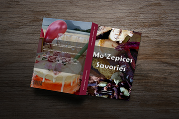

Category:
Branding Design
Mo'Zepices Savories
Mo’Zepices Savories
Category: Publication Design
Client:People who loves cooking.
Project date: 2020
Mo’Zepices Savories is a cookbook that gives the readers a hint about the cookbook that it will be a mixture of spices and desserts. Mo’zepices is meant as “my spices”.
This name has been formed in order to give the personally feeling of the cookbook of using “my spices” which gives the essential feeling of using local spices of Mauritian Spices for desserts. Hence, the word Mo’Zepices gives the pun of “MAU” which is Mauritius spices.
THE GOAL
The goal of Mo’Zepices Savories is to offer methods for readers to make excellent desserts with spices, as spices are a natural medicine that can be found in almost everything we eat. Its goal is to help people who are self-motivated and eager to learn. Whether for personal or professional reasons, Mo’Zepices Savouries aspires to educate its readers how to cook and bake spicy savouries that aren’t too spicy, and instead provide a proper guide on how to use each spice to prepare particular sweets.
Mo’Zepices Savories’ secondary goal is to provide people with healthy, tasty, and visually
appealing dessert recipes. Mo’Zepices Savories can also encourage people to make good
lifestyle choices as a result of their use of this cookbook.
The Masthead of the cookbook is Berlin Sans FB Demi font. i have used it to give a professional and appealing
look on the cover by having an innershadow in order to make look visible and have a contrast between the masthead and background.
The Challenge:
Pack a lot of recipes into a fixed page count and trim size already determined and budgeted — while conveying the appealing beauty of the desserts and at the same time designing the layout to be an easy-to-use go-to cookbook.
